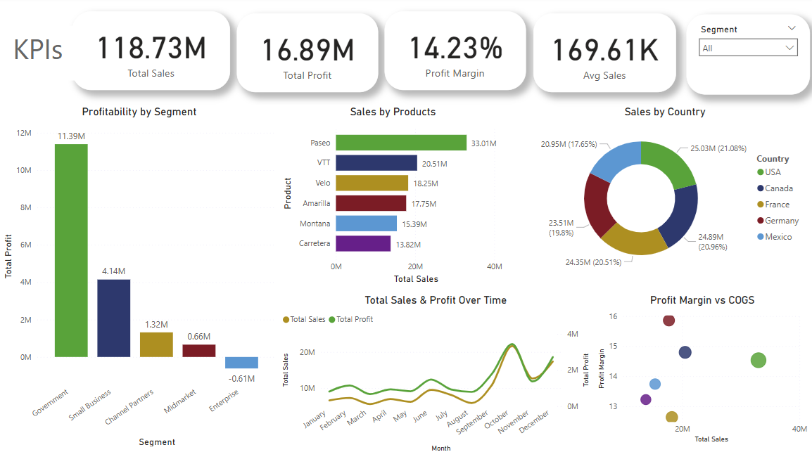
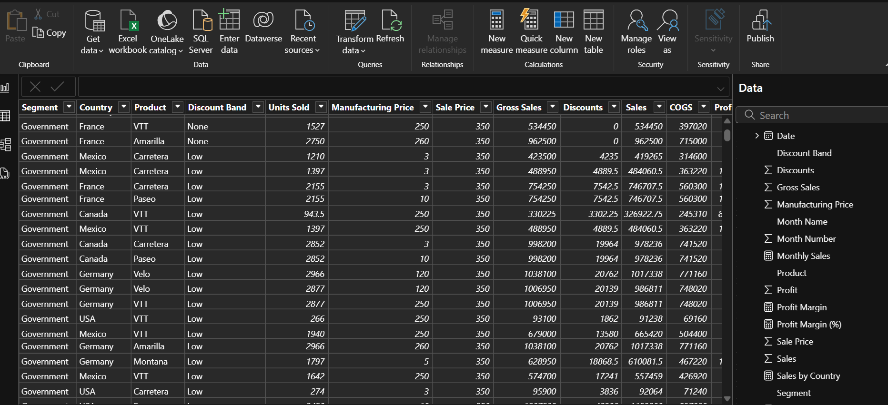

2025
Power BI is a powerful business analytics tool developed by
Microsoft that enables users to visualize and share insights from their data.
It allows you to connect to a wide range of data sources, transform raw data using Power Query
and create interactive reports and dashboards.

This Power BI dashboard analyzes sales performance and profitability.
It highlights total sales, profit, margins, and key trends across segments, products, and countries.
Interactive slicers enable dynamic filtering, helping users gain actionable insights for better decision-making.

Cleaning and Structuring of dataset using Power Query,
and creating key measures, ensuring it is ready for visualization.
I designed this Power BI dashboard to analyze sales performance across different regions, products, and time periods.
The dashboard includes key metrics such as total sales, sales from the previous year, profit margin, and gross profit.
It also visualizes sales trends by region, product distribution, and quarterly performance.
Additionally, customer satisfaction scores and monthly sales trends are displayed for better decision-making.
TI created this Power BI dashboard to analyze customer demographics and segmentation.
It includes insights on age groups, gender distribution, account types, and city-wise customer distribution.
Interactive slicers allow users to filter the data dynamically. The total number of customers is displayed for a quick overview.
This visualization helps in understanding customer patterns and making data-driven decisions.

This Power BI dashboard explores salary trends in the data field, showing key details like the highest-paying roles and a gender salary gap.
It uses Power Query and DAX for data processing and features interactive visuals for easy exploration.
I established relationships between the tables,
ensuring that the data connected correctly for accurate insights.
By doing this, I made the dataset easier to work with and more efficient for generating reports and visualizations in Power BI.
In this project, I optimized a banking dataset by: Creating dimension tables for better data organization.
Removing unnecessary columns to improve performance. Structuring data relationships for efficient analysis....
Used Power Query Editor to filter relevant columns. Created separate tables for demographic, transaction, and account details.
Power BI dashboard for retail analysis, visualizing key performance indicators (KPIs) and trends using bar charts.
he dashboard helps highlight sales performance, customer demographics, and other key metrics,
providing valuable insights for business decision-making.
{kind=link}
{kind=link}
{kind=link}
{kind=link}
{kind=link}
{kind=link}
{kind=link}